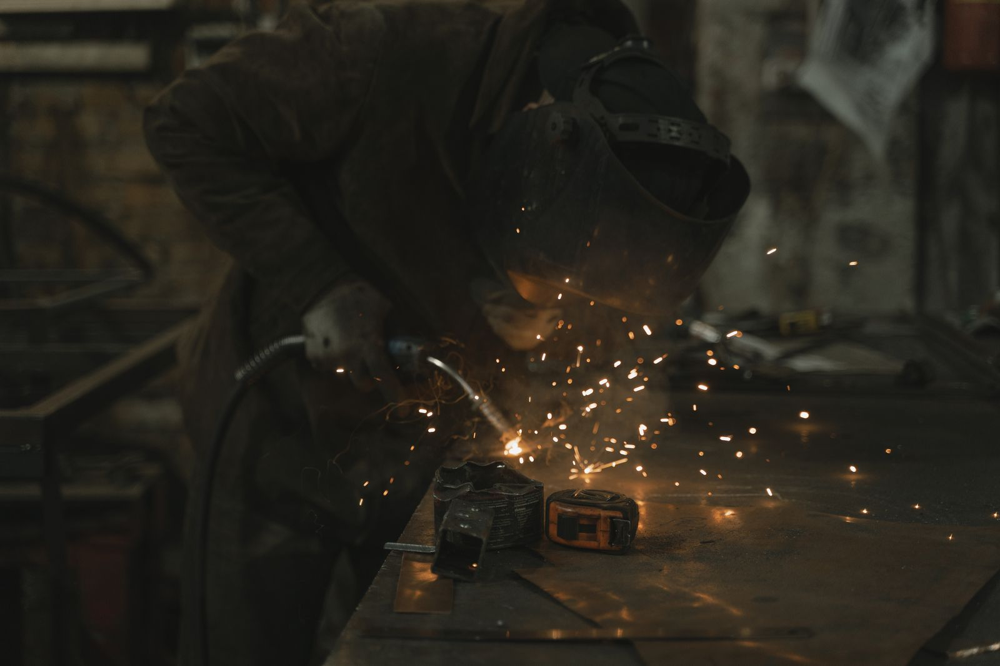
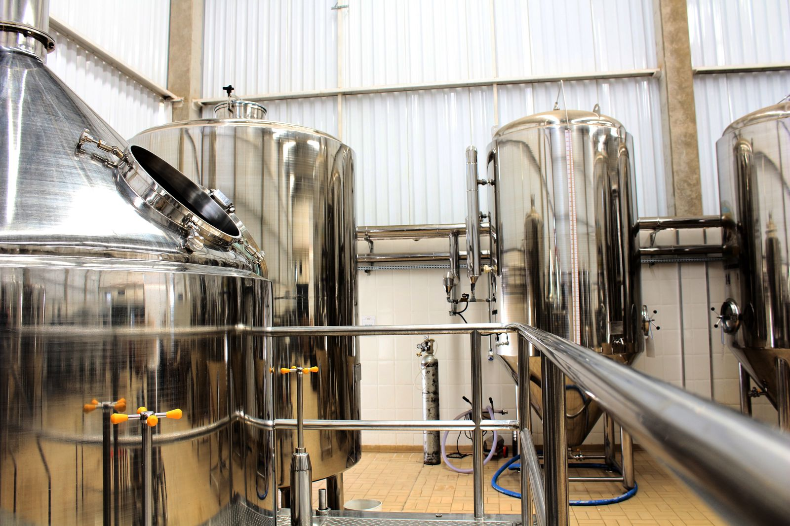

From a focused repair to a planned shutdown

Shutdown & Turnaround Support
Planned and emergency execution. Crews for critical-path outage work, crusher and screen swaps, and production recovery.
Details
Industrial Maintenance
Preventive and corrective programs, equipment installation and commissioning, hydraulic and pneumatic troubleshooting, embedded on-site crews.
Details
Reliability & Rotating Equipment
Pumps, compressors, and gearboxes. Mechanical maintenance, repair, and precision laser alignment for rotating equipment.
Details
Conveyors & Material Handling
Comprehensive repair and full rebuilds of conveyor systems. Potato, grain, crop, packaging, mill, and process equipment support.
Details
Field Welding & Fabrication
Mobile-first. Welding rigs and fully equipped service trucks bring structural repair, custom fabrication, and HDPE fusion to remote and demanding sites.
Details
Specialty Services
Non-destructive testing, pipe thickness and tank mapping, HYTORC precision torque, and capital project support from bid to startup.
Details